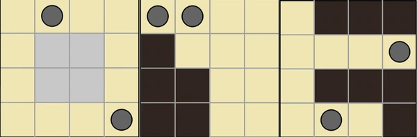
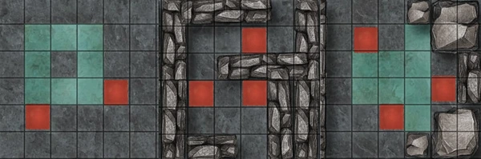
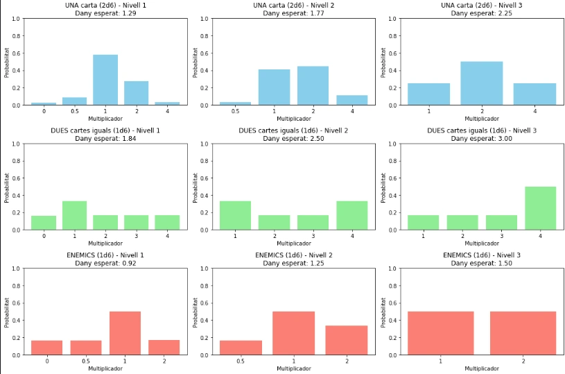
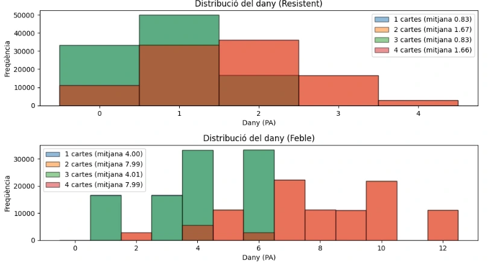
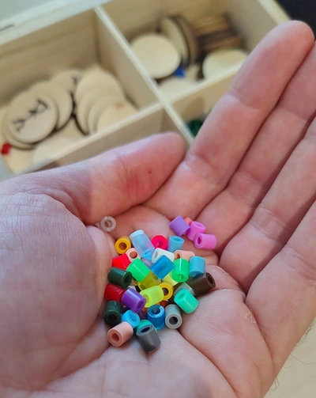
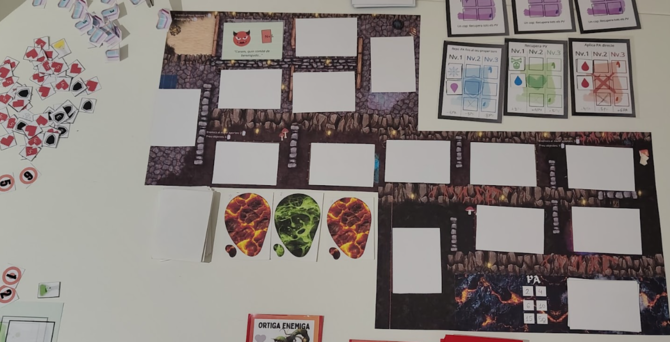
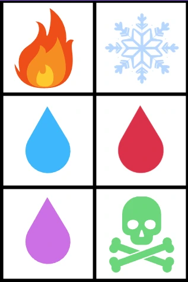
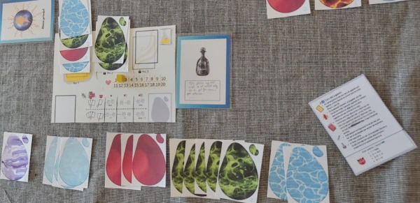
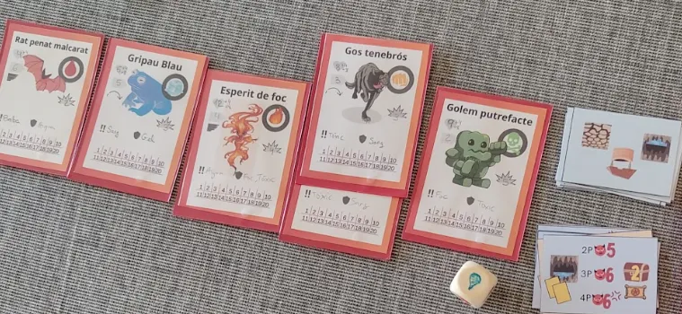

En l'entrada anterior vaig explicar els orígens del joc i la primera versió —aquella del mapa, els líquids i les varetes— i vaig prometre que parlaria de com el vaig simplificar. Però pel mig hi va haver moltes hores de codi, simulacions, eines, i decisions. I tot això no ho vaig explicar.
Construir el món amb codi
PyQt5 i la graella de colors
Per dissenyar el mapa vaig escriure un programa en Python amb PyQt5. Cada casella era un rectangle de color:
- Beix per a terra.
- Negre per a paret.
- Gris per a líquid.
- Un cercle per a incògnites.
No era bonic, però em permetia veure com quedava la distribució de zones, provar diferents configuracions i iterar ràpidament. Podia generar mapes, mirar-los, decidir si funcionaven o no, i tornar a començar en segons.

Inkarnate: de quadrícula a paisatge
Un cop tenia el mapa clar, el recreava manualment a Inkarnate. Agafava la disposició de la graella i la reproduïa donant textura a cada tipus de casella: el verd passava a ser pedra amb ombres, el negre es convertia en murs de pedra erosionada, el blau en tolls o llacs de substàncies.
El procés era artesanal, però va donar personalitat al joc. Vaig arribar a fer diverses peces que s'encaixaven després per a formar mapes complets, amb zones diferenciades i detalls visuals. Era la primera vegada que el projecte semblava un joc de veritat.

Simulacions de combat
Els combat em preocupaven. Havien de ser difícils però justos, i per aconseguir-ho vaig fer simulacions amb codi durant setmanes. A cada iteració ajustava paràmetres:
- Vida dels enemics i dels alquimistes.
- Mal base dels atacs.
- Probabilitats d'encertar o fallar.
- Selecció d'objectiu: a qui atacaven els enemics.
- Modificadors d'estat: verí, cremat, il·luminat...
|
 |
 |
|
Grafics obtinguts despres de fer simulacions |
|
Els combats depenien de varios factors. El jugador tenia cartes de vareta i cartes d'encanteri que podia combinar per a atacar. Cada cosa tenia les seves estadístiques, el seu abast, la capacitat màgica, la força de combat, precisió, etc. Cada canvi afectava l'equilibri general. Una vida massa alta allargava les batalles fins a fer-les avorrides. Una probabilitat massa baixa feia que el jugador sentís que no controlava res. Trobar el punt mig era qüestió de provar, ajustar, i tornar a provar.
La química dels líquids
El sistema de líquids era el cor del joc. Vaig definir molts líquids diferents, cadascun amb la seva personalitat, alguns exemples eren:
Aigua, tòxic, vi, sang, lava, foc, gel, oli inflamable, baba, aigua beneïda, àcid, líquid curatiu, líquid energètic.
Es podien aconseguir directament de les zones "inundades" del joc, les quals a mesura que exploraves el mapa s'anaven desbloquejant. Altres només es podien aconseguir mitjançant interacció entre tokens dels líquids.
Els efects de molts d'ells eren obvis (foc cremava, gel congelava, aigua mullava), d'altres buscaven combinacions més subtils. Una de les coses que més m'agradava era que fossin gotes reals: vaig comprar unes peces petites de colors que normalment s'usen per fer collarets, i les vaig fer servir per representar les gotes de líquid damunt del tauler. Era una solució barata i visualment efectiva.

Quan un alquimista passava per una zona inundada, havia de nadar per sortir-ne i quedava totalment empapat. Això volia dir que si es tractava d'un element perillós, com tóxic, lava, o àcid, tenia el perill de perdre molta vida. Però, és clar, si es trobava en una situació de vida o mort davant d'un enemic, a vegades era la única sortida.
Les interaccions entre líquids, però, eren difícils de gestionar. Cada gota ocupava un espai, es podia recollir o podia mullar el jugador o l'enemic, i fer-ho xocar amb una altra gota havia de produir alguna reacció. Gestionar tot allò damunt del tauler era complicat. Algunes reaccions que recordava eren:
- Aigua + Tòxic = Aigua + Aigua (purificació)
- Aigua + Foc = Fum (s'anul·len)
- Oli + Foc = Foc + Foc (el foc s'escampa)
- Sang + encanteri de llum = Vi (miracle!)
Una cosa que aquí es podia entreveure era la influencia del joc Noita, així com la importància de dur un vial d'aigua sempre a sobre per a curar-te ràpidament del tòxic i del foc, per exemple. Quan certs enemics entraven en contacte amb el líquid, també rebien certes penalitzacions, cosa que ho feia molt divertit perquè podies parar una trampa pel camí del enemic abans que pogués atacar-te.
El punt d'inflexió
Vaig ser conscient del problema un dia concret: estava intentant equilibrar els atacs a distància i em vaig adonar que era un maldecap. Cada casella de distància era un paràmetre nou a tenir en compte. Alhora, gestionar les gotes de líquid —si queien, si tacaven, si es recollien, si reaccionaven— requeria massa microgestió.
Vaig mirar el tauler, ple de peces de colors, fitxes, cartes, i vaig pensar: si tot això fos un joc de cartes, seria molt més àgil.
I així va néixer el deck-builder.
El joc de cartes
Vaig abandonar el mapa. Ja no hi havia graella, ni moviment, ni distàncies. Ara la partida es resol des de la mà de cartes. Aquesta seria la tercera versió del joc. També va haver un salt molt important a nivell narratiu: la història tindria més a veure amb la trilogia de llibres de fantasia El Árbol de las Flores Negras que amb el videojoc Noita, eliminant la reacció entre líquids, les varetes, atacs a distància i l'exploració mitjançant moviments.

Cada jugador començava amb un vial de quatre espais i vint punts de vida. Rebien quatre cartes d'aigua i dos d'un element aleatori. Les barrejaven, n'omplien quatre al vial (en ordre fix, sense reordenar-les) i en deixaven dues a la reserva. La primera carta del vial determinava la velocitat del torn: foc donava 6, gel 5, aigua 4, sang 3, fang 2, babosa 1.

Començar una partida era molt diferent. Ja no calia posicionar-se al tauler ni comptar distàncies. La pregunta ja no era fins on podia arribar, sinó què tenia a la mà i què feia amb allò. Cada vial era una càpsula de decisions: gestionar els espais, decidir quins líquids conservar, quins descartar, quins eliminar permanentment amb eines especials com l'anell de puresa.
A cada ronda es revelava una zona del mapa: enemics, fonts de líquid, objectes. Cada cop sortia una combinació diferent, cosa que feia difícil preparar-se una estrategia a llarg termini però alhora ho feia emocionant.

El vial no només era l'inventari: era la iniciativa. La primera carta marcava la velocitat del torn, i això definia l'ordre de joc entre alquimistes i enemics. Saber quan atacaves respecte als monstres era clau per planificar cada moviment.
Una de les mecàniques que més m'agradaven era la possibilitat de cridar l'atenció dels enemics. Sense un mapa on amagar-se, la seguretat dels companys depenia de la voluntat de sacrifici de cadascú. Un jugador podia posar-se al davant i rebre un atac destinat a un alquimista ferit. Era una decisió col·lectiva, emocional, que creava moments de tensió molt autèntics a taula.

Quan un jugador decidia atacar, usava els líquids del vial per crear reaccions alquímiques. Les receptes s'obtenien durant l'aventura i, en descobrir-les, es llençaven daus per determinar quins elements les conformaven. Cada recepta tenia un efecte únic: des d'una Explosió Arcana que castigava tots els enemics, fins a un Llaç Eteri que inmovilitzava un adversari. La gràcia estava en gestionar els recursos justos per activar-les en el moment precís.
El vial es buidava amb cada acció, però es podia reomplir al final del torn, barrejant les cartes descartades si calia. Hi havia un ritme de consum i recuperació que obligava a pensar a mig termini. No podies malgastar-ho tot d'una tirada.
La partida s'estructurava en quatre nivells, cadascun amb dues zones. En acabar cada nivell es tirava un dau d'essències per determinar els ingredients de les receptes següents i de la següent part de la Quinta Essència, que es componia de tres essències menors:
- El Precursor alquímic: donava +1 dau addicional a cada atac.
- La Concocció vital: en perdre PV, només en perdies la meitat (arrodonint a la baixa).
- El Catalitzador essencial: permetia reordenar els líquids dins dels vials.
Quan les tres es combinaven, formaven la Quinta Essència, l'única capaç de derrotar el Gran Drac que apareixia al final del quart nivell, infligint dany a tothom cada ronda i pressionant el grup per a no allargar la partida.
L'objectiu era el mateix: combinar líquids per crear essències. Però tot passava des de la mà, sense distàncies ni microgestió de gotes. La partida fluïa d'una manera nova: més àgil, més centrada en les cartes, menys en el tauler.
Però el combat seguia ocupant tot el focus. I jo volia que l'alquímia fos la protagonista. Havíem canviat el tauler per cartes, però la partida encara era una cursa per fer el màxim de mal possible.
Encara no havia trobat el camí. Però cada canvi em portava una mica més a prop.